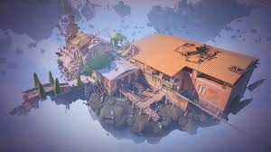

MAPS....
Each match of VALORANT takes place on a map. Maps feature a spawn area for each team, barriers that limit accessible areas during the Buy Phase, and objective sites where the spike is to be planted.
Map rotations are used in Unrated and Competitive, keeping seven maps in the pool at once and disabling all other maps from appearing in these specific game modes. Factors that can influence which maps are rotated out of the pool include player sentiment, time since release, planned updates, and the strategic variance of current and newly-released maps.
| Contents |
Haven |

Split |
Ascent |
Icebox |

Fracture |

Pearl |
Lotus |

The Range |